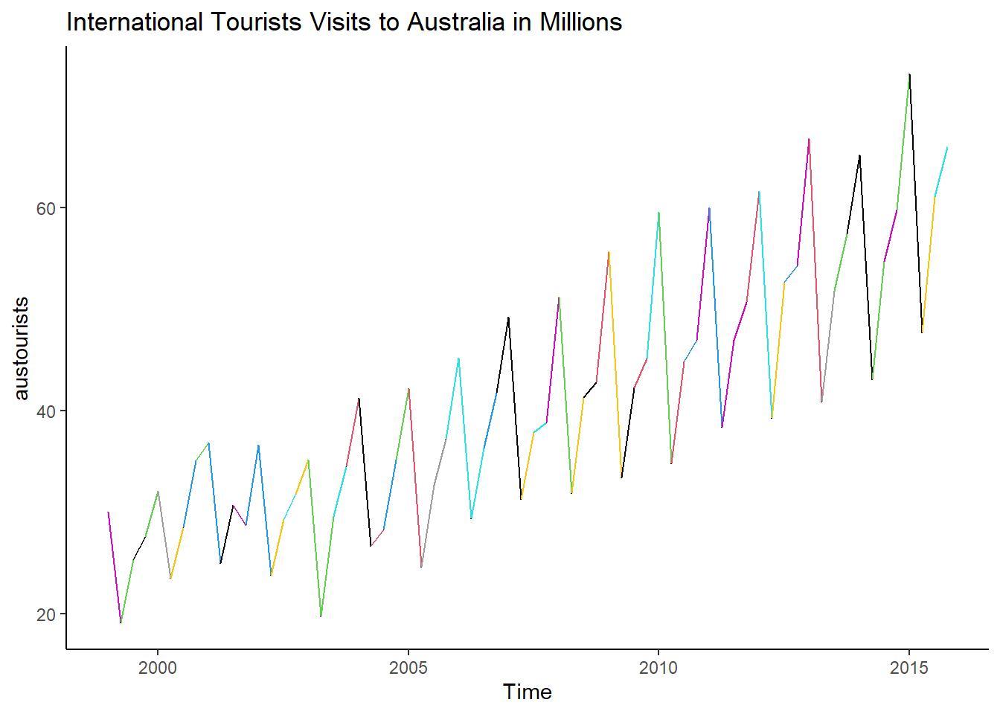
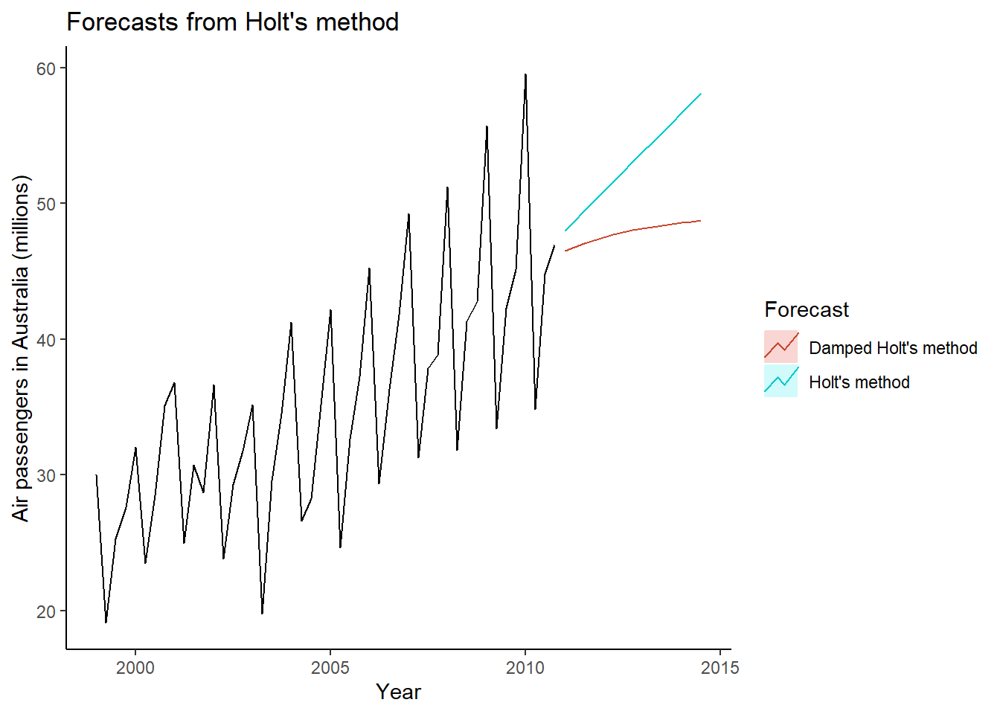
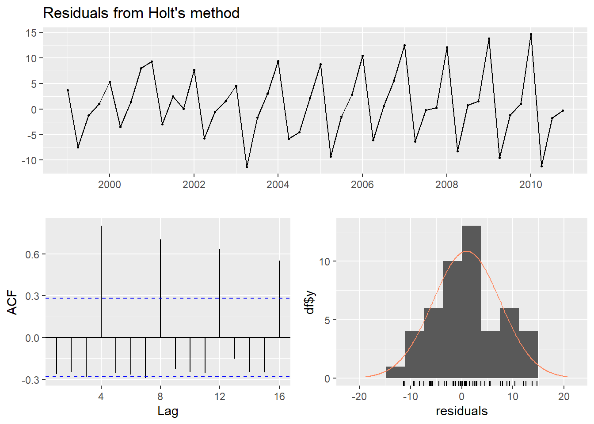

The first thing you need to know about the Forecast package is that there is an incredibly helpful text by Rob J Hyndman and George Athanasopoulos titled Forecasting: Principles and Practice (2nd Ed) which explains relevant concepts and walks through almost every function with examples. If you would like to work through their examples, you can download the fpp2 package which includes Forecast and all of the data. I wish every package had such a helpful guide.
Cross Validated, Stack Exchange’s Q&A for Statistical Topics
Hyndman pretty actively answers questions both on his blog and on Cross Validated, so I suggest reading the comments if your question isn’t answered in a blog entry.
General Tips
When they refer to a time series, they are not referring to data with time information. They are referring to a specific data type, the time series. Unlike a data frame or tibble, there isn’t a column for times, rather a time series has a starting point, an ending point, and a frequency. Typically, a frequency of 1 is annual, 4 is quarterly, 12 is monthly, and so on.
Time Series:
Start = 1
End = 6
Frequency = 1
[1] 392.8300 392.5121 397.3059 398.0113 400.4902 408.0957
The International Tourists to Australia data has quartly data with a start year of 1999, while the start for the Google daily closing stock price is arbitrary, representing an undated year.
The forecast package has some functions which are wrappers that, given data and a forecast horizon, call another function followed by a call to forecast(). For example, holt() calls ets() to fit the data and then forecast(). I found it useful for my purposes to call these functions separately as it allowed me greater control.
Useful Functions
Forecast: Principles and Practices explains the forecasting methods and underlying math well, so I won’t duplicate their efforts, but I will share my notes in an attempt to save others time.
From Forecast
The findfrequency function can calculate the frequency in your data. This can be a useful check to ensure that your frequency assumption is correct before working with your data. I worked with data that we did not expect would have a frequency, but findfrequency() found a frequency of five. This caused me to test seasonal as well as non-seasonal forecast methods. The downside of this function is that in data with multiple frequencies, it will only return the most dominant one. In the case of the Australian tourists data, it returns a half-yearly frequency rather than quarterly.
findfrequency(austourists)
[1] 2
Similarly, the functions ndiffs() and nsdiffs() will return the number of times the given data needs to be differenced in order to become stationary. The type of unit root test used can be set with the test argument set to “kpss”, “adf”, or “pp”. Remember that the null hypothesis for the KPSS test is the opposite of the hypothesis for the Augmented Dickey-Fuller and Phillips-Perron test.
austd <-nsdiffs(austourists)paste(austd ," difference is needed to make the austourists data stationary.")
[1] "1 difference is needed to make the austourists data stationary."
Forecast has functions like autoplot(), autolayer(), ggLagplot(), ggHistogram(), ggAcf(), and ggPacf(), which take package models and use ggplot to create appropriate plots. This simplifies the plotting process while allowing you to add to plots in the same way one would with any ggplot. Below I added a title, theme, and color to the line.
autoplot(austourists) +ggtitle("International Tourists Visits to Australia in Millions") +geom_line(color=austourists) +theme_classic()

Below I use the Holt method on the data twice, once with the damping argument set to TRUE with phi of 0.9 and once with it set to FALSE. This example is in the text, but with different data (Fpp2 7.2). When the damped argument is set to NULL, both options are tried and the best one is returned.
training <-window(austourists, end=c(2010,4))fc <-holt(training, h=15)fc2 <-holt(training, damped=TRUE, phi =0.9, h=15)autoplot(training) +autolayer(fc, series="Holt's method", PI=FALSE) +autolayer(fc2, series="Damped Holt's method", PI=FALSE) +ggtitle("Forecasts from Holt's method") +xlab("Year") +ylab("Air passengers in Australia (millions)") +guides(colour=guide_legend(title="Forecast")) +theme_classic()

The checkresiduals function displays several plots and the results of the Ljung-Box test.
checkresiduals(fc)

Ljung-Box test
data: Residuals from Holt's method
Q* = 88.192, df = 4, p-value < 2.2e-16
Model df: 4. Total lags used: 8
The accuracy method can take the entire data set and compare the portion set aside for testing to a forecast.
(fc_acc <-accuracy(fc, austourists))
ME RMSE MAE MPE MAPE MASE
Training set 0.9211998 6.571903 5.097607 -0.6464137 14.95336 1.778292
Test set -0.7941557 8.899599 7.198491 -4.4212146 14.65768 2.511182
ACF1 Theil's U
Training set -0.2619964 NA
Test set -0.3637125 0.5573859
Values in these objects can be easily accessed, most with base R’s $, though the accuracy values are stored as a matrix and must be referenced accordingly. For example, the test MAPE, 14.6576754, can be accessed with object_name[2,5].
From Other Packages
Forecast imports several packages including stats, tseries, and urca. These also have some useful functions:
From urca, the kpss test.
From tseries, the adf.test
From stats, the Box.test as well as start(), end(), time(), cycle(), and deltaat() which are helpful when working with time series because the times don’t exist as an accessible column in the data structure.